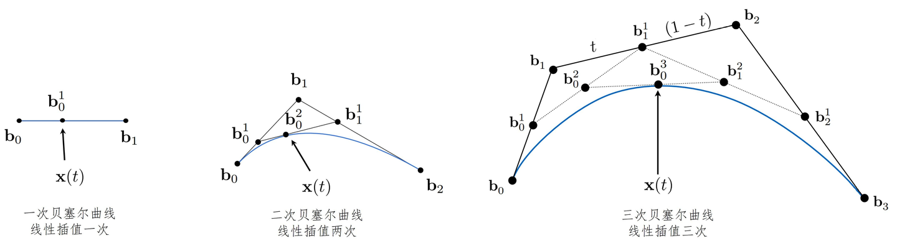

前言
1962 年，皮埃尔・贝塞尔在雷诺汽车公司面临一个核心问题：如何用计算机精确描述汽车车身的复杂曲面？
当时所有的曲线表示方法都存在致命缺陷：
1. 多项式插值：看起来很美，用起来灾难
最直接的想法是：让曲线经过所有给定点。这就是拉格朗日插值。但它有两个无法解决的问题：
- 龙格现象：点越多，曲线越容易在端点附近剧烈振荡
- 全局影响：修改任何一个点，整条曲线都会面目全非
2. 物理样条：无法数字化
当时设计师用的是 “样条”—— 一根有弹性的木条，用压铁固定在几个点上，木条自然弯曲形成的曲线就是样条曲线。
- 优点：曲线平滑，修改一个压铁只影响附近的曲线
- 缺点：无法用数学公式精确描述，无法输入计算机
3. 分段多项式：不连续的噩梦
为了解决全局影响问题，人们尝试用分段的低次多项式拼接曲线。但这带来了新的问题：
- 拼接处的连续性很难保证（位置连续、切线连续、曲率连续）
- 调整一个分段会破坏相邻分段的连续性
- 对设计师来说极不直观
贝塞尔的天才之处，在于他彻底放弃了 “曲线必须经过所有点” 的执念，转而提出了一个全新的概念：控制点。
控制点不直接在曲线上，而是像 “磁铁” 一样吸引曲线向它们靠近。这种看似反直觉的设计，恰恰解决了之前所有的问题。
贝塞尔曲线的动机
-
直观性：设计师不需要懂数学，就能通过拖动点来控制曲线
- 曲线一定经过第一个和最后一个控制点（端点插值）
- 曲线在起点的切线方向就是第一个控制点到第二个控制点的连线方向
- 曲线在终点的切线方向就是倒数第二个控制点到最后一个控制点的连线方向
-
局部性：修改一个控制点，只影响曲线的局部形状
- 对于次贝塞尔曲线，修改第个控制点，只会影响曲线在参数 区间内的形状
- 这完美复刻了物理样条的特性，同时实现了数字化
-
凸包性质：曲线永远被包含在所有控制点形成的凸多边形内部
- 设计师可以一眼看出曲线的大致范围
- 不会出现多项式插值那样的 “失控振荡”
-
计算简单性：适合计算机实现
- 德卡斯特里奥算法：通过简单的线性插值递归计算曲线上的点
- 只需要加法和乘法，计算速度极快
- 数值稳定性好，不会出现精度问题
-
仿射不变性：对控制点进行平移、旋转、缩放、剪切等仿射变换，等价于对曲线进行同样的变换
- 这意味着我们不需要重新计算曲线，只需要变换控制点即可
贝塞尔曲线
Definition
Bezier Curve
给定个控制点坐标，其次贝塞尔曲线的定义为
其中系数来自伯恩斯坦基函数满足
Remark
伯恩斯坦基函数的三个性质保证了：
1.曲线是控制点的凸组合（性质1、2）
2.曲线经过第一个和最后一个控制点（性质3）
3.曲线的形状是控制点位置的平滑加权平均
proof
伯恩斯坦基函数非负性是显然的，时取到。
由二项式定理知
曲线的光滑性刻画

可以看到 n阶贝塞尔曲线就有n+1个控制点。而当曲线的长度较长、形态较复杂时，需要使用多个控制顶点来描述，如果此时使用贝塞尔曲线，那么曲线的次数会非常高，而移动贝塞尔曲线的任何一个控制顶点，都会改变整条曲线的形状，所以此时局部地修改曲线的形态将会是一件相当复杂的事情。
一个临时措施是使用分段贝塞尔曲线，不过需要额外注意两段曲线在衔接处的过渡是否平滑，否则会看起来不太自然，可能更好的方法是使用 NURBS 曲线这样的样条曲线。
样条曲线（spline curve) 是指以样条基函数为加权系数、对控制顶点进行线性组合所构造的参数曲线。样条曲线在实质上是分段的，易于进行局部修改，又在定义上对衔接处的平滑做了保证，例如三次B样条曲线的每一截都可以被表示成一段三次多项式曲线，而且在衔接处有着相同的一阶导数和二阶导数。
为了描述两段曲线在衔接处的光滑程度，可以引入参数连续性（Parametric Continuity）或者几何连续性（Geometric Continuity）。在介绍这两个概念之前，我们先回顾一下分析学中关于函数光滑性的相关描述。
函数光滑性刻画
Definition
连续性:函数在处连续，当且仅当其左右极限等于此处定义值，也即。
连续性：函数在处阶连续可微，也即的1阶到k阶导数在处是连续的。
连续性：函数在处阶可微，称为光滑。
Remark
分析学中的连续性是针对函数的，而不是针对几何对象的。一条曲线作为几何对象，可以有无数种不同的参数化方式，每种参数化方式对应不同的函数，因此会有不同的连续性表现。
曲线的参数连续性
参数连续性是最直接的推广，它将分析学中的函数连续性直接应用于曲线的参数方程。
Definition
参数曲线在处是阶参数连续的，记为，当且仅当：
1.的每个分量在处都是函数。
2.对于分段曲线边界，各分量的左右阶导数相等,也即
Summery
|阶数|名称|几何意义|可能的视觉效果|
|---|---|---|---|
|C⁰|位置连续|曲线在衔接点处没有断开|尖角（如折线的顶点）|
|C¹|切线连续|曲线在衔接点处有相同的切线方向和切线大小|平滑过渡，但可能有 “拐点”|
|C²|曲率连续|曲线在衔接点处有相同的曲率和曲率变化率|视觉上完全光滑，反光均匀|
|C³|挠率连续|曲线在衔接点处有相同的挠率|用于高精度机械加工和流体动力学|
Remark
单条次贝塞尔曲线是参数连续的，也即光滑的，因为多项式函数任意阶都可微。
分段三次贝塞尔曲线要达到连续，需要满足前一段的最后两个控制点与后一段的前两个控制点共线，且距离比为 1:1。
三次 B 样条曲线天生具有连续性，这是它比分段贝塞尔曲线更适合复杂建模的核心原因。
曲线的几何连续性
参数连续性有一个致命缺陷：它依赖于参数化方式。同一条几何曲线，只要改变参数化的速度，就可能从变成，但它的几何形状并没有任何变化。
Example
顿挫参数化
考虑中一个简单情形，一条从到的直线，最简单的参数化为
现在我们改变参数化形式，得到
显然，第二种参数化方法在处的左右切向量是不相等的((2,0)与(4,0))，仅仅改变了参数化形式，参数连续性从退化为了。
因此，参数连续性并不能作为一种不变量以反映曲线的内蕴性质，它是一种较为严格的条件，反映了运动的光滑性。
几何连续性正是为了解决这个问题而提出的，它是不依赖于参数化的(遍历无关)、纯几何的光滑性定义，反映了道路的光滑性。
Remark
特别地，我们可以从上面的例子看出，参数连续性退化通常发生在分段曲线上，因此我们自然地在分段曲线上考察几何连续性的定义。
在考察曲线的几何连续性之前，我们先引入正则参数曲线的定义。
Definition
正则参数曲线
一个映射成为阶正则参数曲线（），当且仅当：
1.是一个非退化区间，也即测度（长度）非零。
2.是映射，也即每个坐标分量都是的。
3.
Remark
正则参数曲线描述了具有起点和终点、无断裂尖角、处处有唯一良定义的切方向的曲线。容易验证如下曲线不是我们期望的正则参数曲线：\begin{gather} r_{1}(t)=(t^2,t^3),t\in[-1,1]; \\ r_{2}(t)=(|t|,t),t\in[-1,1]; \\ r_{3}(t)=(1,1),t\in[0,1]. \end{gather}其中在处切线退化，是奇点；
在处不是的；
是处处切线退化的。
Definition
几何连续性(拓扑共轭视角)
两条正则参数曲线和是连续的，当且仅当：
存在一个微分同胚在处是连续的。
Remark
连续性仅要求为同胚，连续双射，这与动力系统的拓扑共轭定义是相同的。当我们考察两个动力系统的不动点存在性与个数、周期轨道存在性与周期、轨道极限行为（吸引子、排斥子）、连通性与紧致性时，保证形变连续性的同胚足矣：
两个动力系统是拓扑共轭的，当且仅当存在一个同胚不难发现这种共轭形式也存在于群的正规子群、环的理想，后者用于导出商群、商环；而前者的动机也类似，得到动力系统的等价类以便我们分类讨论不同系统的性质。
动力系统中的拓扑共轭是几何连续性的一个平凡情形，我们不难发现几何连续性的动机在于，通过微分同胚将所有具有相同阶几何性质的参数曲线归为同一等价类，摆脱具体参数化方法（坐标系选取）的依赖，忠于几何对象本身的性质。
Summery
| 阶数 | 名称 | 几何意义 | 可能的视觉效果 |
|---|---|---|---|
| G⁰ | 位置连续 | 与 C⁰完全等价：曲线在衔接点处没有断开，点集重合 | 尖角（如折线的顶点）、断裂 |
| G¹ | 几何切线连续 | 曲线在衔接点处有相同的切线方向，允许切线大小（参数化速度）任意正倍数缩放 | 视觉上完全平滑，无任何尖角；人眼无法区分 G¹ 与 C¹ 的差异 |
| G² | 几何曲率连续 | 曲线在衔接点处有相同的曲率()大小和方向，允许曲率的参数导数不同 | 视觉上绝对光滑，反光均匀自然；人眼感知光滑性的极限，绝大多数工业设计的标准要求 |
| G³ | 几何挠率连续 | 曲线在衔接点处有相同的挠率()大小和方向，允许挠率的参数导数不同 | 人眼完全无法感知差异；仅用于航空航天叶片、精密光学曲面等超高精度加工领域 |
此外，我们有\begin{gather} C^0=G^0 \\ C^k\subset G^k \end{gather}
Frenet 曲率序列
我们已经熟知参数曲线在中的曲率以及中曲线的曲率、曲面的挠率这两种几何量，实际上我们可以考虑更一般的情形，中一条正则曲线的个独立的几何不变量，也即Frenet曲率序列。
Preliminary
考虑中的正则参数曲线（），满足:
是光滑的。
同时，存在唯一的参数变换，使得，称之为弧长参数化、曲线的自然参数。
Remark
所有几何不变量在弧长参数下有最简单的表达式。
Definition
Frenet标架
定义单位切向量，满足，
对于,通过施密特正交化逐点递推定义一组正交基\begin{gather}v_{i}(s)=r^{(i)}-\sum_{j=1}^{i-1}\langle r^{(i)}(s),e_{j}(s)\rangle\cdot e_{j}(s) \\ e_{i}(s)=\frac{v_{i}(s)}{|v_{i}(s)|} \end{gather}称之为曲线在处的Frenet 标架。
Definition
Frenet 曲率序列
Frenet 标架的导数满足如下Frenet-Serret公式
e^{\prime}(s)=\kappa_{1}e_{2}(s) \
e_{i}^{\prime}=-\kappa_{i-1}(s)e_{i-1}(s)+\kappa_{i}e_{i+1}(s),2\le i\le d-1 \
e_{d}^{\prime}=0\kappa_{d-1}e_{d-1}(s)
\end{cases}$$
其中即为Frenet曲率序列。
Remark
对于任意维度欧式空间中的曲线，第一曲率描述了其偏离直线的速度，即切向量在方向上的转动角速度；
第二曲率描述了曲线偏离其密切平面（张成的平面）的速度，即密切平面的转动角速度；
第曲率描述了曲线偏离其前个标架向量张成的维密切子空间的速度。曲率序列完全刻画了曲线的几何形状，作为其完备的几何不变量，我们有如下定理：
两条中的正则曲线，相差一个刚体运动（平移+旋转），当且仅当它们具有相同的Frenet 曲率序列。回到几何连续性，我们有：
两条中的正则曲线在衔接点处是连续的，当且仅当它们在该点的前个Frenet曲率相等。
Properties of Bezier Curve
Definition
次贝塞尔曲线
给定个控制点，其控制的贝塞尔曲线定义为：其中为次伯恩斯坦基函数。
Remark
上述定义对任意成立，其中
时得到实数轴上的一段区间；
得到平面贝塞尔曲线；
得到空间贝塞尔曲线；
得到高维贝塞尔曲线，常用于数据拟合、机器学习领域。
Propety
1.过端点
2.端点阶导数只和最近个点相关\begin{gather} r^{(k)}(0)=\frac{n!}{(n-k)!}\sum_{i=0}^k(-1)^{k-i}\binom{k}{i}b_{i}, \\ r^{(k)}(1)=\frac{n!}{(n-k)!}\sum_{i=0}^k(-1)^{i}\binom{k}{i}b_{n-i}. \end{gather}
3.凸包
4.单条曲线全局光滑
5.仿射不变性
6.升阶性质\begin{gather}\sum_{i=0}^nB_{i,n}(t)b_{i}=\sum_{i=0}^{n+1}B_{i,n+1}(t)b^*_{i},\\ b_{i}^*=\frac{i}{n+1}b_{i-1}+(1-\frac{i}{n+1})b_{i} \end{gather}7.基函数递归性
Algorithm
德卡斯特里奥（de Casteljau）
如下图所示，通过递归线性插值得到给定控制点定义的贝塞尔曲线上的任意点坐标。
r(t)=b_{0}^n(t), \
b_{i}^k(t)=(1-t)b_{i}^{k-1}(t)+tb_{i+1}^{k-1}(t)
\end{gather}$$
Remark
上述贝塞尔曲线的性质良莠并存，一方面：
1.曲线不会经过中间的控制点，中间控制点只起到 “吸引” 曲线的作用。同时，伯恩斯坦基函数非负性和单位分解性质保证了曲线永远不会 “跑出” 控制点的范围，不会出现多项式插值那样的龙格振荡现象，数值稳定性极好。2.仿射不变性使得我们不需要重新计算曲线上的点，只需要变换控制点即可得到变换后的曲线。这大大提高了图形学中几何变换的效率。
然而，伯恩斯坦基函数的支集是整个参数区间，这使得：
1.控制点修改具有全局性影响。修改任何一个控制点，都会改变整条曲线的形状。2.次数与控制点数量的强制绑定。n 次贝塞尔曲线必须有且仅有 n+1 个控制点。要增加控制点来调整曲线的细节，就必须升高曲线的次数。而高次多项式的引入同时带来了数值不稳定性与计算量的增加。因此，用贝塞尔曲线表达复杂形状（如圆锥曲线）是困难的。
3.拼接连续性的严格约束。由性质2知，显然衔接点处的条件会限制近邻个点的变动。
在下一个笔记B-Spline，我们基于对贝塞尔曲线缺陷的认知，一起认识B样条曲线的动机、定义与性质。